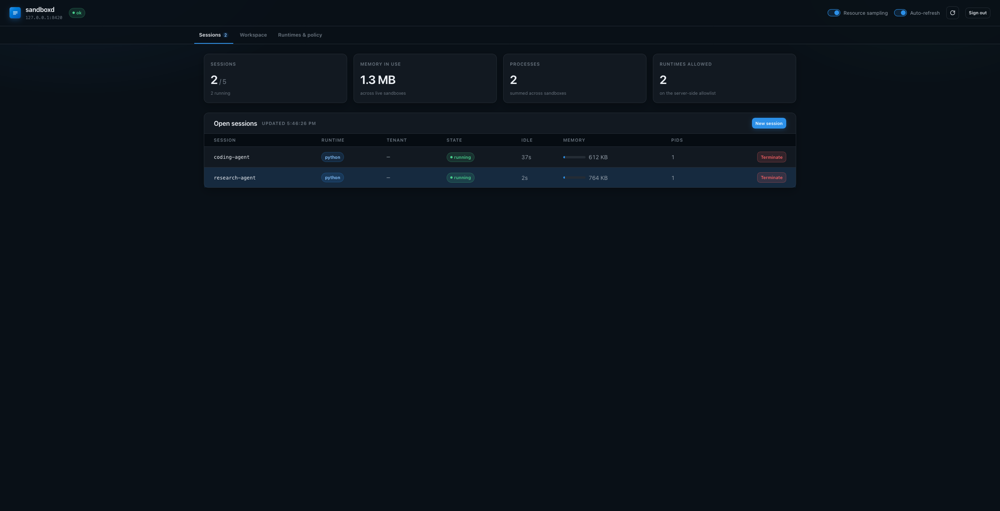
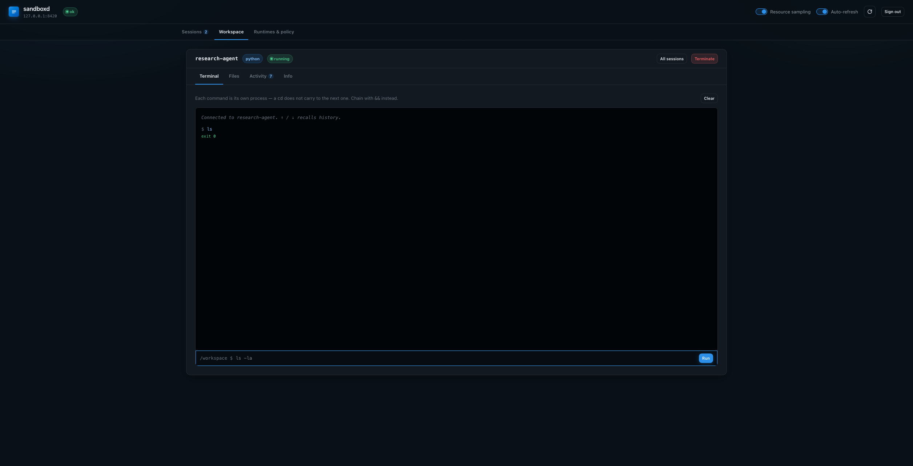
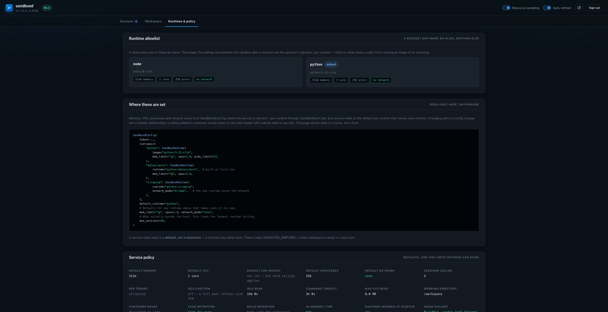

Remote Sandboxes¶
RemoteSandbox runs your agent's sandbox in another process, so your
application never needs Docker access. A separate service — sandboxd — owns the
Docker socket and rents out sandboxes over HTTP.
from pydantic_ai_backends.remote import RemoteSandbox
sandbox = RemoteSandbox("http://sandboxd:8080", token="...")
print(sandbox.execute("python -c 'print(1+1)'").output) # "2"
sandbox.stop()
The session — and the container behind it — opens on the first operation, so an agent granted a sandbox it never touches costs nothing.
Why this exists¶
If your application runs in a container and wants a Docker sandbox, there are only three options:
| Approach | What it costs you |
|---|---|
Mount /var/run/docker.sock into the app |
The socket is an unauthenticated API for root on the host. Anything that can reach it can start a privileged container that bind-mounts /. |
| Docker-in-Docker | Needs --privileged. Same outcome, more moving parts. |
sandboxd + RemoteSandbox |
The app holds only an HTTP token. One small service holds the socket. |
The third is what this module is. No docker-in-docker.
Installation¶
The client needs only httpx; the service needs FastAPI and the Docker SDK, so
they are separate extras — install the client extra in your app image and the
server extra in the sandbox service image.
pip install pydantic-ai-backend[remote] # RemoteSandbox (client)
pip install pydantic-ai-backend[server] # sandboxd (service)
Running the service¶
The shipped entrypoint configures itself from the environment, so a compose file is all a deployment needs:
Every field of SandboxdConfig is SANDBOXD_ plus its name
in upper case — SANDBOXD_MAX_SESSIONS, SANDBOXD_WORKSPACE_ROOT,
SANDBOXD_PERSIST_CONTAINERS, and so on. There is no separate vocabulary to
learn and nothing to keep in step: the dataclass is the documentation.
Three rules cover the parsing:
| Absent | takes the shipped default |
Empty, on a field that may be None |
turns it off — SANDBOXD_CPUS= means no hard CPU ceiling, which absent cannot say |
| Booleans | 1/0, true/false, yes/no, on/off, any case |
A value that will not parse, or a combination the service refuses — hibernation without a workspace root, a default runtime no entry defines — fails at startup with one line naming the variable, rather than at the first request.
SANDBOXD_HOST and SANDBOXD_PORT decide where it listens; they default to
127.0.0.1:8080, so a container needs SANDBOXD_HOST=0.0.0.0.
The allowlist from the environment¶
SANDBOXD_RUNTIMES takes a compact form for what a compose file usually wants:
@name builds one of the shipped catalogues instead of
pulling an image, and ;field=value sets that runtime's own ceilings — the
field names are SandboxRuntime's:
A JSON object is accepted too, and is the only form that can express a runtime whose package list is written out rather than named:
SANDBOXD_RUNTIMES='{"ml": {"runtime": {"name": "ml", "base_image": "python:3.12-slim",
"packages": ["torch"]}, "mem_limit": "8g"}}'
Unset it and the service takes its own default allowlist.
Configuring it in Python instead¶
create_app takes a SandboxdConfig directly, for a service embedded in
something larger. config_from_env is importable on its own if you want the
environment parsed and then adjusted:
# sandboxd_app.py
from pydantic_ai_backends.remote.server import SandboxdConfig, create_app
app = create_app(
SandboxdConfig(
token="a-long-random-secret",
runtimes={
"python": "python:3.12-slim",
"node": "node:20-slim",
},
default_runtime="python",
max_sessions=20,
mem_limit="1g",
cpus=2.0,
network_mode="none",
idle_timeout=1800,
# Files and installed packages survive a reaping.
workspace_root="/workspaces",
persist_containers=True,
workspace_ttl=14 * 24 * 3600,
# One tenant cannot occupy the whole pool.
max_sessions_per_tenant=5,
)
)
In Compose, the socket is mounted only into this service, and the service is never published to the edge:
services:
app:
# no docker socket here
environment:
SANDBOXD_URL: http://sandboxd:8080
SANDBOXD_TOKEN: ${SANDBOXD_TOKEN}
networks: [backend]
sandboxd:
image: ghcr.io/vstorm-co/sandboxd:latest
volumes:
- /var/run/docker.sock:/var/run/docker.sock
- sandbox_workspaces:/workspaces
environment:
SANDBOXD_TOKEN: ${SANDBOXD_TOKEN:?generate a long random value}
SANDBOXD_HOST: 0.0.0.0
SANDBOXD_WORKSPACE_ROOT: /workspaces
SANDBOXD_PERSIST_CONTAINERS: "true"
SANDBOXD_MAX_SESSIONS_PER_TENANT: "5"
networks: [backend] # deliberately no `ports:`
volumes:
sandbox_workspaces:
Pin the tag in production — ghcr.io/vstorm-co/sandboxd:0.2 tracks patches of
one minor version, and a bare digest pins it exactly. The image is published
from this repository on every release and contains only the package and its
server extra.
The runtime allowlist¶
A request names an alias and nothing else. What that alias runs — the image, the ceilings, whether the sandbox gets a network — is the operator's decision, per runtime:
from pydantic_ai_backends.remote.server import SandboxRuntime, SandboxdConfig
SandboxdConfig(
token=token,
runtimes={
# A ready-made image: starts as fast as a pull.
"python": SandboxRuntime(image="python:3.12-slim", mem_limit="1g", cpus=1.0),
# A built runtime: the first session installs the packages into an image,
# later ones hit the cache. Worth it when per-session installs would
# dominate.
"datascience": SandboxRuntime(runtime="python-datascience", mem_limit="4g", cpus=2.0),
# The one runtime allowed to reach the network, deliberately.
"scraping": SandboxRuntime(runtime="python-scraping", network_mode="bridge"),
},
default_runtime="python",
# Defaults for any runtime that names none of its own.
mem_limit="1g",
cpus=1.0,
)
Ceilings are per runtime because they are not one number for a whole service: a notebook-style data runtime needs several gigabytes where a plain shell needs a few hundred megabytes, and forcing one value on both either starves the first or over-commits the host for the second.
A ceiling a runtime leaves unset takes the service-wide value, which is a
default rather than a maximum — a runtime may name more. What bounds the host
is max_sessions times the largest runtime ceiling, and that is the number to
size for.
runtime= accepts the name of any
built-in runtime or a RuntimeConfig of your own.
Its work_dir is overridden with the service's, so the workspace volume, the
archive endpoints and a client's paths cannot end up disagreeing about where
files live.
Shipped catalogues¶
| Catalogue | What it is |
|---|---|
DEFAULT_RUNTIMES |
What you get when you name nothing: python and node, both ready-made, no ceilings of their own. A default that built package sets would make a fresh deployment's first session take minutes. |
SUGGESTED_RUNTIMES |
A fuller catalogue to adopt or copy from — data, analytics, documents, scraping, TypeScript, Go, Rust, each with a memory ceiling that suits it. |
from pydantic_ai_backends.remote.server import SUGGESTED_RUNTIMES, SandboxdConfig
SandboxdConfig(token=token, runtimes=SUGGESTED_RUNTIMES, default_runtime="python")
Not the default, because every entry is a commitment on the operator's own host:
python-datascience builds an image on first use and is given four gigabytes, and
python-scraping is the one entry allowed the network. Those are decisions worth
reading before enabling.
A bare string still works wherever a runtime entry is expected —
runtimes={"python": "python:3.12-slim"} is SandboxRuntime(image=...).
Security model¶
A process that can talk to the Docker daemon is root-equivalent on the host, so
sandboxd is the most sensitive process in a deployment. It is built around
that:
- Clients choose nothing about the container. Image, mounts, network mode and
every resource ceiling come from
SandboxdConfig. A request carries at most a runtime alias, validated against the allowlist — so a client cannot run an image of its choosing. - Session ids are pattern-checked before they reach a path or a container, so one cannot traverse a directory.
- Each session gets its own token. The service token is the only one that may open or enumerate sessions; a session token reaches only its own sandbox.
- The token is verified before existence is revealed, so an unauthenticated
caller cannot enumerate session ids by watching
401turn into404. network_modedefaults to"none". A service handing sandboxes to untrusted code should not give them the network unless that is deliberate.- Bind it to a private network. It has no TLS and no rate limiting of its own.
Running sandboxes unprivileged¶
A container runs as root unless told otherwise, and that is two problems: an
escape starts from uid 0, and every file an agent writes into its bind-mounted
workspace is owned by root on the host, so a sandboxd running
unprivileged cannot clean up after its own sessions.
sandbox_uid turns that off:
Built runtimes are then built around that user — a real account for it, a home
directory, and a virtualenv it owns first on PATH — and their containers run
as it, with each session's workspace given to it.
The virtualenv is what makes this workable rather than merely safer. A non-root
user cannot write to the interpreter's own site-packages, so without one an
agent's first pip install fails; uv, which has no --user mode, fails with
no way forward at all. Owning a virtualenv means both simply work, and console
scripts land somewhere already on PATH. Measured in that shape: whoami,
git commit, pip install, uv pip install and running the installed tool all
succeed, while /etc and the system site-packages are refused.
Two things it asks of the deployment:
- The service must be able to give each workspace to that uid. Either run it
with the privilege to
chown, or run it as that uid so the directories are created owned by it. A service that can do neither is told so when the session opens, rather than starting a sandbox whose first file write would fail with an error nothing explains. - Ready-made runtimes stay as root. An image nobody built for this has no
such user and no virtualenv, so an agent inside one could install nothing. The
uid reaches runtimes built from a
base_imageand no others.
Sessions that outlive a run¶
By default, opening a session id that is already in use is a 409 — silently
sharing another caller's sandbox is the worse failure. Pass reuse=True when a
sandbox is meant to span several runs, such as one conversation:
# First turn: creates the session.
sandbox = RemoteSandbox(url, token=token, session_id=session_id, reuse=True)
sandbox.start()
sandbox.write("/notes.md", "draft")
# Later turn, new process even: attaches to the same sandbox.
sandbox = RemoteSandbox(url, token=token, session_id=session_id, reuse=True)
sandbox.start()
assert sandbox.read_bytes("/notes.md") == b"draft"
A runtime that disagrees with the open session is refused, not honoured.
Honouring it would mean replacing a live sandbox and discarding the files the
caller came back for.
Choosing what the session id keys on¶
The session id is the only thing you choose, so it is what decides who shares files with whom:
| Keyed on | Who shares the sandbox | Good for |
|---|---|---|
| a run id | nobody — ephemeral | one-shot analysis |
| a conversation id | everyone in that chat, group chats included | a Slack channel, a web thread |
| a user id | that person across all their chats | a personal workspace |
| an agent id | everyone who talks to that agent | one shared machine for a team |
The last two are data-sharing decisions rather than technical ones: with an agent-keyed sandbox, any user reads what any other user wrote. Make that visible wherever the choice is made.
Keep ids unguessable — derive them from a UUID you generated, never from a sequential id or user input — and inside 64 characters.
Making it fast on a small host¶
Four settings, and on a 4 GB box each one is worth more than it sounds.
SandboxdConfig(
token=token,
runtimes=SUGGESTED_RUNTIMES,
prewarm=True, # build and pull the allowlist at startup, not on a request
persist_containers=True, # a woken session restarts instead of rebuilding
tmpfs_size="64m", # scratch writes stay in RAM, off the overlay
cpu_shares=1024, # weight rather than a hard cap, so idle cores get used
cpus=None,
)
None of them moves the ceiling as far as separating resident sessions from open ones does — see A working set, not a hard cap, which is where the order-of-magnitude is. These four are what make each resident session cheap once that split is in place.
prewarm pulls and builds the whole allowlist in the background as the
service starts, sequentially so several builds do not fight over one small host.
Without it the first session on a built runtime pays for the image — measured at
about eleven seconds for a pandas runtime — in the middle of somebody's request.
A runtime that will not build is logged and skipped; one bad entry does not stop
the others being ready.
tmpfs_size gives every sandbox an in-memory /tmp. Otherwise scratch files
land in the container's write layer, which is slower and grows the disk. The
mount is given exec explicitly, because Docker's default is noexec and that
breaks installing any package that builds from source.
Its pages are charged to the container's own memory cgroup, so it comes out of
mem_limit rather than being extra: a sandbox limited to 512m with a 64m /tmp
has 448m left for its processes, and one that tries to exceed the limit through
/tmp is killed by its own cgroup rather than troubling the host. Keep it small
when many sessions are open at once.
cpu_shares versus cpus. A hard cpus=1.0 means a sandbox never exceeds
one core — including when the other three are idle, which on a small VPS is
usually the wrong trade. A weight only applies under contention: one active
sandbox may use the whole machine, and several are still divided fairly. Set
both if you want a ceiling and fair sharing.
Builds use BuildKit when the docker CLI is present, which is what lets a
package cache survive between builds — editing one package in a runtime then
re-downloads nothing. The Python SDK has no BuildKit support at all and its
builder rejects cache mounts outright, so without the CLI the generated
Dockerfile falls back to discarding the cache instead. GET /policy reports
which builder is in force, so it is never a mystery.
Images superseded by a build are removed as it finishes. The tag embeds a digest of the runtime, so every edit mints a new one and would otherwise leave a few hundred megabytes behind for good — an image still backing a running container is left alone.
What the host is worth, before any of the above¶
Three changes outside this library, in descending order of megabytes recovered. None of them needs a code change here.
crun as the daemon's default runtime. runc is Go, with a garbage
collector and a supervising process per container; crun is the same interface
in C. Reported at roughly twice the container-lifecycle speed and 30–40% less
per-container overhead, which at a hundred sessions is a gigabyte the sandboxes
get instead:
This is a different question from oci_runtime, which selects an isolation
model per runtime alias. crun is a faster runc, not a different boundary, so
it belongs in the daemon's own config where it applies to everything.
zram, and then memswap_limit. A sandbox is denied swap by default —
memswap_limit is pinned to mem_limit — because a container swapping to a disk
starves every other one on the host. That reasoning does not hold when swap is
zram: the pages stay in RAM compressed, idle Python heaps at roughly 3:1, and
the alternative to a little swapping is an OOM kill mid-command. On a host with
zram configured, and only there:
One base image across the allowlist. Read-only pages are shared between
containers only when the layer is literally the same file. Runtimes built from
one python:3.12-slim share the interpreter and the standard library; runtimes
built from different bases share nothing. SUGGESTED_RUNTIMES is arranged this
way — every Python entry on python:3.12-slim, every Node one on node:20-slim
— and a custom allowlist is worth checking against the same rule. It is also the
reason containers beat microVMs badly on a small host: a microVM caches those
pages once per guest, so a hundred of them hold a hundred copies.
The library matters more than the tuning¶
Measured on one 188 MB CSV, the same GROUP BY in each:
| Library | Import | Time | Peak RSS | Under a 384 MB ceiling |
|---|---|---|---|---|
| pandas | 97 MB | 1.7 s | 570 MB | killed, exit 137 |
| Polars | 43 MB | 0.2 s | 502 MB | survives, 0.7 s |
| DuckDB | 51 MB | 0.2 s | 312 MB | survives, 0.6 s |
pandas materialises the whole frame and copies freely, so it needs roughly three times the file in memory. DuckDB and Polars stream, so the same answer fits in a sandbox that pandas cannot run in at all — and they are about eight times faster into the bargain.
That single swap does more for how many sessions fit than every container setting
on this page combined: sizing an analysis sandbox for DuckDB rather than pandas
roughly doubles how many run at once on a fixed amount of RAM. It is also the
difference between a readable error and a silent one — DuckDB raises an
OutOfMemoryException the agent can read and retry around, where pandas gets
SIGKILL and the tool call just reports exit 137.
Hence python-analytics in the catalogue carries a
1 GB ceiling while python-datascience carries 4 GB: the second number is pandas'
appetite, not the task's. Keep pandas available — most model-written code reaches
for it first — but point agents that work on real files at the columnar runtime.
What survives, and for how long¶
Three settings, and they cover different things. Getting one wrong looks like the agent forgetting its work:
| Setting | Preserves | Without it |
|---|---|---|
workspace_root |
the work directory, on a host volume per session | files vanish when the container is reaped |
persist_containers |
the container's write layer — packages installed with pip or apt |
the agent reinstalls its dependencies after every idle timeout |
workspace_ttl |
nothing — it reclaims unused workspaces | workspaces accumulate on disk for ever |
Retention pulls the three apart, and the defaults say what an agent's user expects: files are kept for ever, builds are reclaimable.
SandboxdConfig(
workspace_root="/var/lib/sandboxd",
persist_containers=True,
workspace_ttl=None, # the default: the agent's files are the work
container_ttl=30 * 86400, # its installs are rebuildable, so reclaim them
)
container_ttl removes a stopped sandbox container that has been stopped for
that long, keeping its workspace untouched — the disk equivalent of deleting a
build directory and keeping the source. What a session installed inside itself can
be installed again; what it wrote to /workspace cannot. workspace_ttl is the
opposite knob and deletes the files, so it stays None unless a retention policy
says otherwise.
workspace_root alone is the trap: /workspace comes back but
pip install pandas does not, because it landed outside the volume. If a session
is meant to feel like "the same machine", set both.
persist_containers names each container after its session, so a reaped session
is stopped rather than discarded and the next attach restarts it. The cost is
that stopped containers stay on the host until the session is purged — which is
why it is off by default.
Ending a session for good¶
sandbox.stop() # ends the turn, keeps the files for the next one
sandbox.stop(purge=True) # discards the container and the workspace
Purge when the thing the session belonged to is gone — a deleted conversation, a
user who left. workspace_ttl is the safety net for everything nobody
remembered to purge: a workspace with no open session, untouched for longer than
the TTL, is swept. The clock runs from when the session was last opened, so an
active session is never swept however old its directory is.
A working set, not a hard cap¶
max_sessions counts live sandboxes, and by default a full pool refuses the
next request with 429. That is the wrong answer when the pool is full of
sessions nobody is using: an agent is turned away while a hundred containers sit
idle holding slots.
evict_idle_after changes that. At the ceiling, the least recently used session
idle for at least that long is hibernated to make room:
SandboxdConfig(
token=token,
max_sessions=10, # resident sandboxes — what the RAM has to hold
max_open_sessions=200, # sessions that exist — what the disk has to hold
evict_idle_after=120, # idle two minutes? your slot can be reused
workspace_root="/var/lib/sandboxd",
persist_containers=True,
)
Hibernating is not closing. The container, the process supervising it and the memory both hold are given up; the session's token, its runtime, its event log and its files stay. Its next request wakes it, finds its work, and pays a container start — measured at 0.09 s for a persisted one. Nothing the client holds stops being valid, so it never has to learn that any of this happened.
That splits one number into two, which is the point:
max_sessionsbounds resident sandboxes. This is the RAM number: it times the largest runtime ceiling is the worst case the host must survive.max_open_sessionsbounds sessions that exist, resident and hibernated together. This is the disk number, and it is properly much larger. At the ceiling the session that has been asleep longest is closed for good; with every open session resident, the caller gets429.
On a small host that gap is the whole design. Ten resident sessions at 384 MB is a machine that fits in 4 GB; two hundred open ones is what it can advertise.
A hibernated session shows in GET /sessions with state: "hibernated" and
alive: false, and as asleep in the dashboard. idle_timeout still ends it:
a session asleep longer than that is closed on the next sweep, since one nobody
came back to is one nobody is coming back to.
Two deliberate limits on it:
- A busy session is never evicted. Only sessions idle for at least
evict_idle_afterare candidates, because killing an agent's work to serve somebody else's first request is worse than making them wait. With every session genuinely busy the caller still gets429— backpressure is the honest answer there, not an unbounded queue. Waking is subject to the same rule: a hibernated session whose slot cannot be freed is answered429rather than taking one from somebody working. - It requires
workspace_root. Hibernating a session whose files live only in its container would discard them silently, so the configuration refuses rather than making that trade quietly. - What does not survive is process state. A hibernated session's background processes — a dev server left running through the console toolset — are stopped with the container. Files survive; a long-lived process does not.
max_sessions=None removes the ceiling entirely, for hosts where something else
does the bounding.
Capacity per tenant¶
max_sessions caps the service. That is not enough when one application serves
many tenants: the busiest one fills the pool and everybody else gets 429.
With max_sessions_per_tenant set, a tenant at its own ceiling is refused while
others are still served. The label is capacity only — it grants nothing and
authorizes nothing, and only a holder of the service token can open a session at
all. It is reported back in GET /sessions and GET /policy so an operator can
see who is holding what.
Nothing starts until it is used¶
Constructing a RemoteSandbox performs no I/O. The session is opened by the
first operation, which means a container starts only when the model actually
reaches for a file or a command:
sandbox = RemoteSandbox(url, token=token, session_id=session_id) # no HTTP yet
agent = Agent("openai:gpt-4.1", capabilities=[ConsoleCapability(backend=sandbox)])
result = agent.run_sync("What is 2 + 2?") # answered without any container
result = agent.run_sync("Write hello.py") # this is what opens one
That matters most for an agent that may need a sandbox: granting the capability
no longer costs a container per run. Call start() yourself only to pre-warm one
before a latency-sensitive turn.
Opening is guarded, so two operations arriving at once on a thread pool open one
session rather than racing each other into a 409. A failure to open degrades
like any other operation failure — the tool call reports an error, the run
continues.
Browsing files without a sandbox¶
A workspace outlives the sandbox that wrote it, so listing and reading it should not cost a container start. Opening a conversation from last week just to see what the agent produced would otherwise boot a container, wait for it, and reap it minutes later.
/workspaces/{session_id}/ls and /workspaces/{session_id}/read serve the host
volume directly. They work for a session reaped long ago, and there is a typed
client for them:
from pydantic_ai_backends.remote import WorkspaceArchive
archive = WorkspaceArchive("http://sandboxd:8080", token=service_token)
for entry in archive.ls(session_id):
print(entry["path"], entry["size"])
print(archive.read(session_id, "report.md"))
Four things to know:
- Requires
workspace_root. Without it there is nothing stored to read, and the endpoints answer409naming the setting rather than pretending the workspace is empty. - Service token only. A reaped session has no token of its own left, and the intended caller is an application proxying file views to its users after applying its own authorization.
- It raises rather than degrading, unlike
RemoteSandbox. No model is waiting on it, and an application answering "show me my files" needs to tell "there are none" apart from "the service is misconfigured".WorkspaceArchiveError.status_codecarries what the service said. - Only the work directory is stored. A file the agent wrote to
/tmpis not in the volume and so not in the archive.
Paths are interpreted relative to the sandbox's work directory, and an absolute in-container path works too — so a UI can hand back exactly the path a live listing showed it.
Why this is the most careful code in the module¶
These endpoints read the host filesystem, so path containment is the only thing between a caller and the rest of the machine. Two ways in are closed, both by resolving first and checking after:
..in a requested path.- A symlink the sandbox itself planted. Untrusted code in a container can run
ln -s /etc/shadow notes.txt. Inside the container that points at the container's own file; read from the host side it would resolve to the host's. So a path that resolves outside the workspace is refused even when the link sits inside it, and such an entry is omitted from a listing rather than reported.
Never hand a session token to a browser¶
Worth stating separately, because the fix is not obvious: the session token
authorizes /exec as well as /ls and /read. Putting one in a web page gives
whoever opens DevTools a shell inside the sandbox. The service token is worse.
Proxy instead — your backend holds the token, checks that this user may see this conversation, and forwards only listing and reading.
Failure behaviour¶
File and command operations degrade rather than raise: a transport failure
surfaces the same way a missing file does — b"", [], or an Error: ...
string — matching LocalBackend and DockerSandbox. A tool call must not take
down an agent run because a socket blipped.
start() is the exception and does raise: a caller who cannot get a sandbox at
all needs to know why.
Capacity and reaping¶
max_sessionscaps resident sandboxes; beyond it, opening a session either hibernates an idle one or answers429rather than starting unbounded containers.max_open_sessionscaps how many sessions exist at all, resident and hibernated together.max_sessions_per_tenantapplies a ceiling pertenantlabel.idle_timeoutreaps sessions that have gone quiet, and the reaping is visible to the service's own bookkeeping — a reaped session's token and event log are released with it. It applies to hibernated sessions too, which the sweep ends once they have been asleep that long.execute_timeoutclamps every command, so one client cannot occupy a worker indefinitely.workspace_ttlsweeps workspaces no session has opened for that long, on the same interval as idle reaping.- Resource sampling is cached for a few seconds and taken concurrently off the event loop. One Docker stats call costs over a second — it waits for a second sample to compute a CPU rate — so a listing that sampled each sandbox in turn would take a second per session and hold up everything else meanwhile.
- Blocking sandbox calls run on the service's own thread pool (
max_workers), kept separate from asyncio's shared default one because sandbox commands are long.
Observability¶
| Endpoint | Auth | What it gives you |
|---|---|---|
GET / |
none | What the service is, and its mounted endpoints |
GET /healthz |
none | Liveness, session count, capacity |
GET /policy |
service token | The ceilings and image allowlist actually in force |
PUT /policy |
service token | Change the ceilings and lifetimes, without a restart |
GET /sessions |
service token | Every open session; ?usage=true also samples memory and CPU |
GET /sessions/{id} |
session or service token | One session, without reviving a dead sandbox |
GET /sessions/{id}/events?after=<seq> |
session or service token | The session's operation log, for incremental polling |
The activity log records what each operation addressed, whether it succeeded and how long it took — never file contents or command output, which would turn an audit trail into a data leak that also grows without bound. It is a bounded ring buffer per session.
Changing the ceilings without a restart¶
PUT /policy writes the ceilings and lifetimes onto the running service, and
answers with the whole policy so a caller sees what is now in force — including
the fields it did not touch. Before it, every one of the thirty-odd knobs was
reachable only through the environment, and a restart drops every resident
sandbox: raising one memory ceiling ended every conversation on the host.
curl -X PUT http://sandboxd:8080/policy \
-H "X-Sandbox-Token: $SANDBOXD_TOKEN" \
-d '{"mem_limit": "2g", "workspace_ttl": 86400,
"runtimes": {"coding": {"cpus": 4.0}}}'
Ceilings and lifetimes only, and the omissions are the point. A client cannot name an image, a mount or a device when it creates a session, because a process holding the Docker socket can start a privileged container that mounts the host. That reasoning does not stop applying because the caller holds the service token: in a multi-tenant deployment the token is held by an application, per tenant, and an organization's administrator is not the person who runs the host.
So what may change is how much a sandbox may consume and how long it may live:
max_sessions, max_open_sessions, max_sessions_per_tenant,
evict_idle_after, idle_timeout, execute_timeout, max_read_bytes,
workspace_ttl, container_ttl, mem_limit, memswap_limit, cpus,
cpu_shares, pids_limit, tmpfs_size, default_runtime, and the same
ceilings per already-allowed runtime under runtimes.
What may not, and stays in the environment where changing it is a deployment action:
| Refused | Because |
|---|---|
runtimes membership |
Adding an alias means naming an image |
network_mode |
host is not a ceiling, it is an escape |
oci_runtime |
The same, one level lower |
sandbox_uid |
0 is root |
work_dir |
It is where the workspace volume mounts and the archive reads |
persist_containers, prewarm |
Startup shape, not ceilings |
Sending one of those is a 422 naming the field, not a key quietly dropped — an
operator who tries to widen the network is told no rather than left believing they
have. An unknown runtime, in default_runtime or under runtimes, is a 400:
refused rather than created.
A change applies to the next sandbox. Docker sets a ceiling on the container, so one already running keeps what it was created with — lowering a memory limit does not reach into the sandbox currently using too much.
The overrides file¶
SANDBOXD_POLICY_OVERRIDES=/etc/sandboxd/policy.json is the same thing without a
write endpoint, for a deployment that would rather not have one. The file holds
exactly what PUT /policy accepts, it is read once before anything is served, and
re-read whenever its modification time moves — the service already sweeps on a
timer, so this rides along with that and adds nothing to shut down.
Both go through one function, so neither can put the service in a state the other cannot describe: the same writable set, the same validation, the same refusal for an alias that does not exist.
A malformed file is logged and ignored, and the previous values stand. That is deliberate: an operator who mistypes a ceiling should get a log line, not a daemon that will not boot and takes every resident sandbox with it. A file deleted after being read is left alone rather than reverted — reverting would mean keeping a second copy of the environment's values to put back, and the honest reading of a deleted overrides file is "stop overriding from here", which is a restart.
Dashboard¶
SandboxdConfig(ui_enabled=True) serves a dashboard at /ui: one
self-contained HTML file, no build step and no CDN, so it works offline and
behind a strict CSP. Three views:
Sessions — capacity at a glance, and every open session with its tenant, idle time and memory against its own ceiling. Clicking a row opens its workspace; a session can be created here with a runtime, an id and a tenant.

Workspace — one session at full width: a Terminal with command history, a Files browser, the Activity log and Info.

Runtimes & policy — the allowlist as cards (image, description, memory, CPU,
processes, network, and whether the first session builds an image), the
SandboxdConfig that produces it, and every service default and retention
setting in force.

The Files browser reads the live sandbox by default and can switch to the stored workspace, which is served from the host volume. That distinction is worth knowing: reading a stopped session live restarts its container, while the stored workspace needs no container at all — and shows only the work directory.
Off by default: the page asks a human for the service token, and that token can start containers on the host. Keep it on localhost or a private network.
Using it with an agent¶
RemoteSandbox implements the same synchronous surface as DockerSandbox, so it
drops into a console toolset or SessionManager unchanged:
from pydantic_ai import Agent
from pydantic_ai_backends import ConsoleCapability
from pydantic_ai_backends.remote import RemoteSandbox
sandbox = RemoteSandbox("http://sandboxd:8080", token=token, session_id=session_id)
sandbox.start()
agent = Agent(
"openai:gpt-4.1",
capabilities=[ConsoleCapability(backend=sandbox)],
)
Passing the sandbox to the capability keeps it out of your deps type — see Capability.